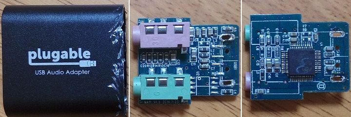

Raspberry Pi 用USBオーディオインターフェースの選定
2017年04月15日 カテゴリー：Raspberry Pi
Raspberry Piはマイク入力がないため、別途USBオーディオインターフェースが必要となります。とりあえず試した3種類を紹介しておきます。
■Creative Sound Blaster Play!
たまたま手持ちにあったもので、現在は後継機種が出ています。
・分解されている方の記事→USB DAC を分解
C-Media CM119というICチップが使われています。Raspberry Piに挿すだけで認識し、録音・再生ができます。しかしPure Dataでは「tried but couldn't sync A/D/A」というエラーが数分に一度発生し、一瞬だけノイズが出ます。いろいろ設定を変えましたがこのエラーは消えないため、別のものを試すことにしました。
■Plugable USB オーディオ変換アダプタ

接着剤で固めてあるため、分解すると元に戻せません。USB端子側のプラスチック部分を壊す方が楽だと思います。
こちらはC-Media HS100BというICチップとなっています。これも認識は問題ありませんが、Pure Dataで上記と同じエラーが発生します。市販されている安価なUSBオーディオインターフェースはおそらくC-MediaのICを使っているでしょうから、別のものを買っても同じエラーになりそうです。エラー時のノイズは一瞬でほとんど気づかないため、やむを得ずこれを使っていくことにします。※現在はエラーは出ていません（追記参照）。
周波数特性を測定してみると、低域がかなり削られています。たぶん入力のコンデンサの容量が少ないのだろうと思い入力から辿っていくと、コンデンサC12が怪しいとわかりました。これに10μFの積層セラミックコンデンサを並列に追加すると特性が改善しました（1μFのフィルムコンデンサ等でも大丈夫だと思います）。
入力インピーダンスが低いため、ギターを繋ぐ場合は前段にバッファーが必要となります。バッファー等に関しては別に記事を書く予定です。
■BEHRINGER GUITAR LINK UCG102
だいぶ前に買ったのですが、現在は値上がりしているようです。Texas Instruments PCM2902というICチップが使われています。少し基板が大きいので採用保留としました。軽くテストしかしていませんが、これもたまにPure Dataのエラーが出ます。ただバッファーが不要なのは楽なので、今後こちらに変更するかもしれません。
---以下2017年4月17日追記---
「tried but couldn't sync A/D/A」というエラーは下記サイトを見て導入したリアルタイムカーネル（もしくは、cmdline.txtの設定項目）が原因かもしれません。導入せずにセットアップすると、今のところエラーは発生していません。特にレイテンシーも変わらないため、導入しない方がよさそうです。
・リアルタイムカーネル導入参考ページ→Raspberry Pi 3とリアルタイムカーネル(3)[自前ビルド無し導入編(おまけ)]
コメント欄に「I2Sのサウンドデバイスでレイテンシーが抑えられる」という記載もあるので、今後の検討課題です。
■USB接続ミニマイク
分解しただけですが、一応おまけで紹介しておきます。ICを覆う黒い樹脂は取り除けませんでしたが、lsusbコマンドで確認するとC-Media CM108と認識していました。